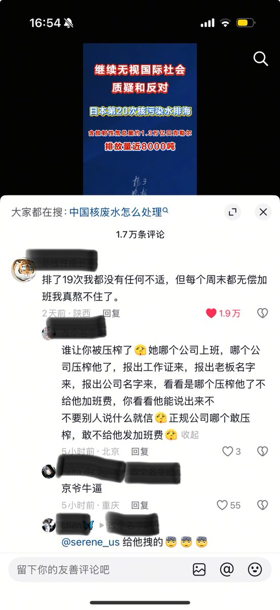
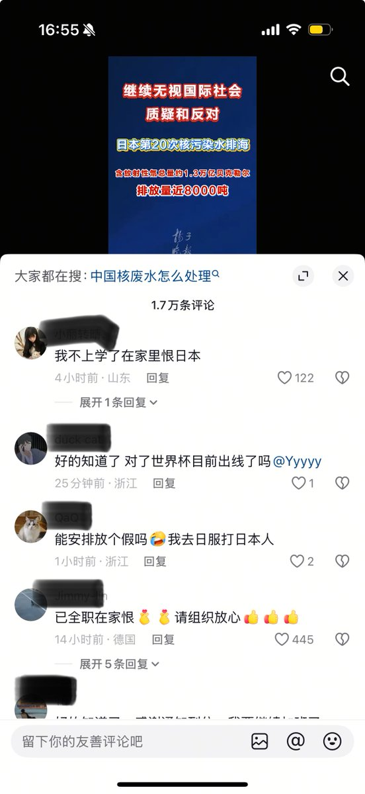

最後一朵 Mandrake
@Ekouuuuuu
日本和大亞灣排的核污染水哪個更多🤔


李老师不是你老师
@whyyoutouzhele
6月23日，扬子晚报报道：日方继续无视国际社会的质疑和反对，第20次完成核污染水排海。
评论区翻车现场：
“排了19次我都没有任何不适，但每个周末都无偿加班我真熬不住了。”
“能安排放个假吗 我去日本打日本人”
“已全职在家恨日本，请组织放心” https://t.co/XQtIT6hUsv